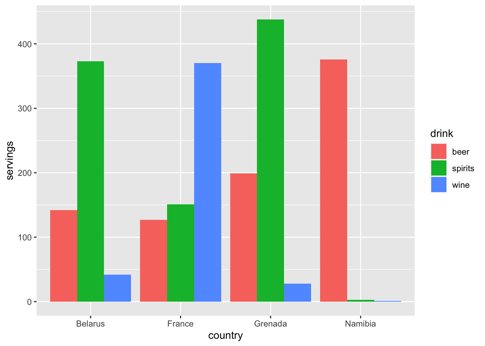
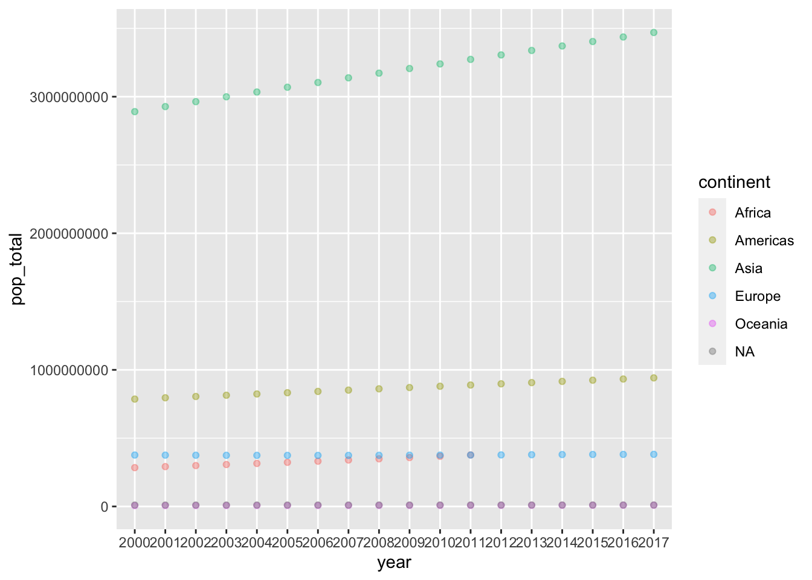

knitr::opts_chunk$set(message = FALSE,echo=FALSE)
library(fivethirtyeight)
library(tidyverse)
library(countrycode)
options(scipen = 10 )Pivot Practice
We’ll tidy up the drinks data frame from fivethirtyeight and the billboard dataframe from tidyr. Then we’ll join the codelist data frame to the world_bank_pop to show how the world population has changed over time.
Problem 1: Heavy Drinkers
Goal: Pivot longer the drinks dataframe. Make a bar plot of the top four most intoxicated countries (I ended up using geom_col).
rename()the columns to drop the “servings”.Drop the
total_litres_column.Pivot and save the new data frame.
- Plot a bar graph for the top 4 alcohol drinking countries and set position = “dodge” in the atheistic.

Problem 2: Toping the charts.
Goal: Find out which artist topped the charts longest in the year 2000.
Take the billboard data frame and tell me which song was in the one spot of the charts for longest.
Hint: If you tell R cols= wk1:wk76 it’ll know you mean all columns between those weeks.
# A tibble: 17 × 3
artist track n
<chr> <chr> <int>
1 Destiny's Child Independent Women Pa... 11
2 Santana Maria, Maria 10
3 Aguilera, Christina Come On Over Baby (A... 4
4 Madonna Music 4
5 Savage Garden I Knew I Loved You 4
6 Destiny's Child Say My Name 3
7 Iglesias, Enrique Be With You 3
8 Janet Doesn't Really Matte... 3
9 Aguilera, Christina What A Girl Wants 2
10 Lonestar Amazed 2
11 N'Sync It's Gonna Be Me 2
12 Sisqo Incomplete 2
13 Aaliyah Try Again 1
14 Carey, Mariah Thank God I Found Yo... 1
15 Creed With Arms Wide Open 1
16 matchbox twenty Bent 1
17 Vertical Horizon Everything You Want 1Problem 3: Populations are growing.
Goal: We’ll use the codelist dataframe and world_bank_pop dataframe to make a point plot of each continents populations by year. You will need to install the country code run install.packages(“countrycode”) in the console (not in the markdown file) to install the countrycode package.
Using both an inner_join(), a pivot_longer(), and a few verbs make a point plot showing how the total population of each continent changes between 2000 and 2017.
Warning: Removed 6 rows containing missing values (geom_point).